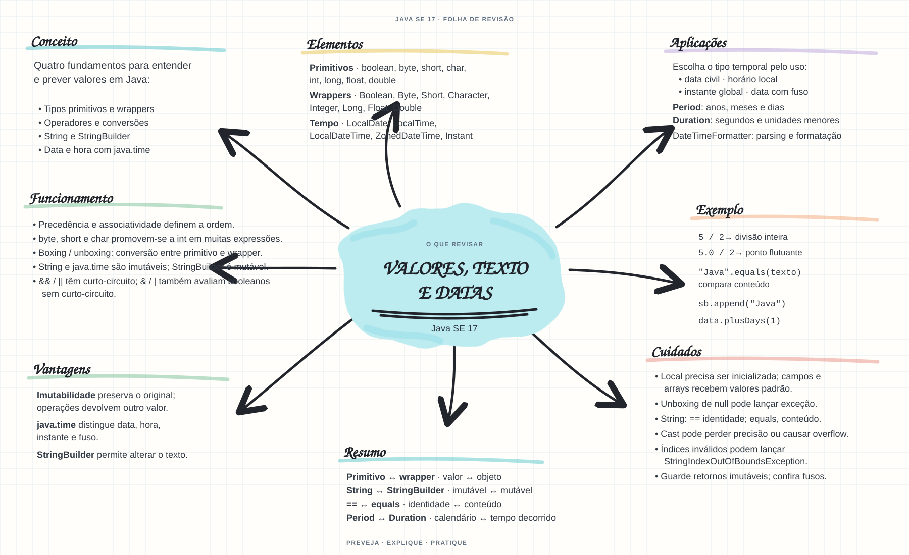

Escolha um assunto para abrir as notas de estudo. Os mapas mentais complementam o conteúdo como material de revisão.


Abrir mapa mental do capítuloMARCO DE CONCLUSÃO
Escreva um programa que calcule um total, formate uma mensagem e trabalhe com uma data sem alterar o valor original.
Como este capítulo se relaciona com cada exame
1Z0-808 · Java 8
Fundamentos reaproveitáveis; valide APIs e objetivos específicos de Java 8.
1Z0-829 · Java 17
Base de estudo deste portal; confirme o mapeamento com o blueprint vigente.
1Z0-830 · Java 21
Conceitos úteis; confira as APIs e mudanças de linguagem em Java 21.
Orientação editorial sobre reaproveitamento do material; não representa objetivos oficiais nem garante cobertura do exame. Consulte o comparativo e as fontes da Oracle.